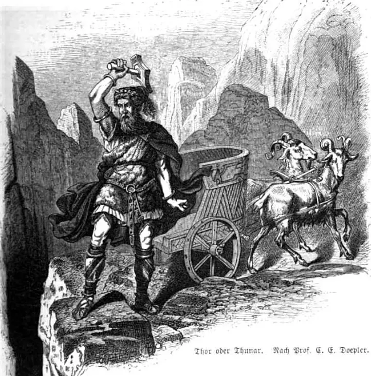
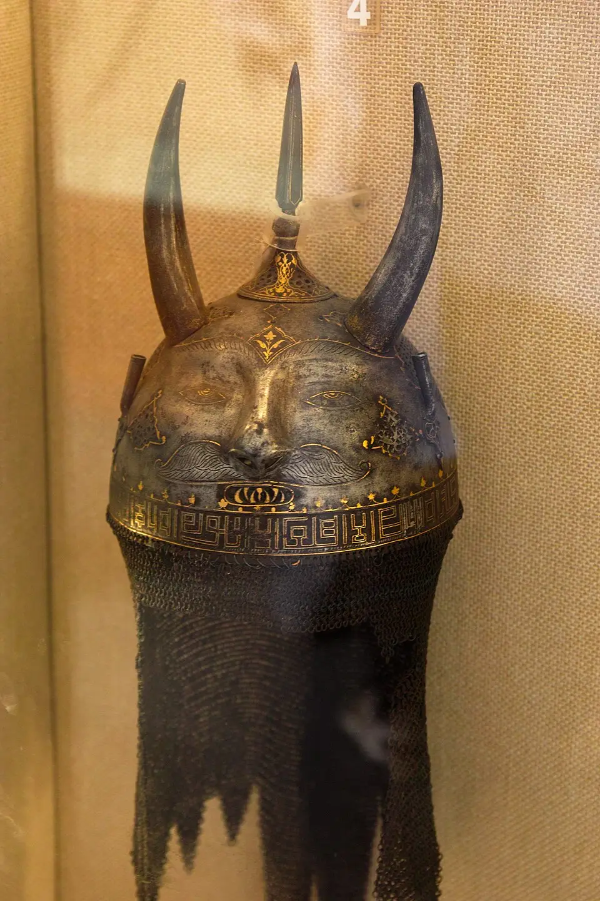

Người Viking không đội mũ có sừng
Trong số rất ít mũ chiến Viking từng được tìm thấy, không chiếc nào có sừng. Chiếc mũ sừng nổi tiếng được may cho sân khấu opera ở Bayreuth năm 1876.

Ngày 29 tháng 3 năm 1943, Gunnar Gjermundbo đang san đất để xây nhà cho cha mẹ ở trang trại Gjermundbu, gần Haugsbygd, Na Uy. Khi xới vào một gò đất dài, đồ vật bắt đầu lộ ra. Hôm sau, một nhà sử học địa phương gọi điện báo cho Đại học Oslo. Trong mộ có kiếm, rìu, áo giáp lưới, và một chiếc mũ sắt vỡ thành chín mảnh. Chiếc mũ ấy không có sừng. Đến nay, nó vẫn là bằng chứng rõ nhất về việc chiến binh Viking thực sự đội gì.
Mộ Gjermundbu cũng là ngôi mộ Viking duy nhất ở Scandinavia và Tây Âu có cả mũ lẫn áo giáp lưới.
Những chiếc mũ Viking có thật
Mộ Gjermundbu có niên đại thế kỷ 10. Theo Wikipedia, những mũ thời Viking tìm được đến nay đều không có sừng, và có cấu tạo gần với kiểu mũ "kính mắt" của thời Vendel trước đó. Theo Wikipedia, cùng với các mảnh mũ Tjele, Yarm, Lokrume và một mảnh ở Kyiv, đây là một trong chỉ năm mũ Viking được biết đến, và là một trong hai chiếc dựng lại được. Mộ Gjermundbu cũng là ngôi mộ Viking duy nhất ở Scandinavia và Tây Âu có cả mũ lẫn áo giáp lưới.
Văn bản thời Viking thường nhắc tới mũ trụ, nhưng không bao giờ nhắc tới sừng. Ngay cả các tác giả Kitô giáo, vốn muốn tả người Viking là man rợ, cũng không nói đến chi tiết này. Mũ trụ trong sử thi Beowulf được tả giống mũ thời Vendel và mũ gắn hình lợn rừng, đều không có sừng. Vậy chiếc sừng từ đâu mà ra?
Sừng sinh ra ở Bayreuth


Năm 1876, họa sĩ người Đức Carl Emil Doepler thiết kế trang phục cho buổi công diễn bộ opera Der Ring des Nibelungen của Richard Wagner tại liên hoan Bayreuth. Trang phục của ông có mũ gắn sừng, và theo Wikipedia, được xem rộng rãi là khởi đầu cho hình ảnh người Viking đội mũ sừng.
Hình ảnh ấy thuộc về thời Lãng mạn thế kỷ 19, khi người châu Âu đi tìm một quá khứ anh hùng cho dân tộc mình. Từ sân khấu, nó lan sang tranh minh họa sách, như một bức "Viking" vẽ năm 1908, rồi sang phim ảnh và quảng cáo. Nhưng mũ có sừng không hoàn toàn là chuyện bịa.
Những chiếc mũ có sừng thật
Mũ có sừng đã tồn tại ở Bắc Âu, chỉ là sớm hơn nhiều. Năm 1942, một công nhân đào than bùn ở Brøns Mose, gần Veksø, Đan Mạch, cảm thấy lưỡi xẻng chạm vào vật gì cứng. Ban đầu nó bị để sang một bên như rác. Xem lại mới biết đó là một mũ đồng có trang trí, đi kèm một tấm gỗ có rãnh, có lẽ là giá đặt mũ. Cuộc khảo sát cùng năm tìm thêm các mảnh của chiếc thứ hai.
Hai chiếc mũ Veksø gần như giống hệt nhau, làm bằng đồng thiếc có hàm lượng thiếc khoảng 16,8%. Năm 2019, một nhân viên Bảo tàng Quốc gia Đan Mạch phát hiện nhựa bạch dương dính trên một chiếc sừng khi chuẩn bị chụp ảnh. Kết quả định tuổi bằng carbon cho thấy mũ được chôn muộn nhất vào khoảng năm 907 đến 857 TCN, tức gần 2.000 năm trước thời Viking. Vùng đất ấy khi đó có lẽ là một cái hồ, nên mũ nhiều khả năng là đồ cúng thả xuống nước, không phải đồ ra trận.
Bằng chứng nói gì
Ngoài mũ Veksø, sừng xuất hiện trên một số hiện vật khác: mũ Waterloo của người Celt, khoảng năm 150 đến 50 TCN, tìm thấy dưới sông Thames; phù điêu trên Khải hoàn môn Constantine ở Rome, năm 315; những người múa đội mũ sừng hình chim trên các tấm trang trí của mũ Sutton Hoo, khoảng năm 600. Hầu hết đều mang tính nghi lễ.
Lập luận "sừng vướng víu nên không ai mang ra trận" nghe hợp lý, nhưng không đủ để kết luận. Wikipedia nhắc rằng trong lịch sử, người ta vẫn từng mang những món trang trí bất tiện ra chiến trường. Lý do chắc chắn hơn là: chưa tìm thấy chiếc mũ chiến Viking có sừng nào, và chưa văn bản đương thời nào nhắc tới nó.
Một chi tiết bên lề
Hình dáng sừng trên mũ Veksø khớp với sừng của giống bò sừng dài ở Ý, một nhánh của bò rừng châu Âu. Vì thế có nhà nghiên cứu cho rằng mũ được nhập từ Ý, trong khi người khác nghĩ nó được làm tại Scandinavia theo kỹ thuật đúc đồng của châu Âu. Hai chiếc mũ nay nằm ở Bảo tàng Quốc gia Đan Mạch tại Copenhagen.
Đến những năm 2020, Snopes và kênh History vẫn phải viết bài đính chính chuyện mũ sừng Viking. Hình ảnh sân khấu năm 1876 tồn tại bền hơn cả những chiếc mũ thật dưới đất.
Người Bắc Âu thời đồ đồng có đội mũ sừng trong nghi lễ; người Viking hơn 1.500 năm sau thì, theo mọi bằng chứng hiện có, ra trận với mũ sắt tròn trơn.